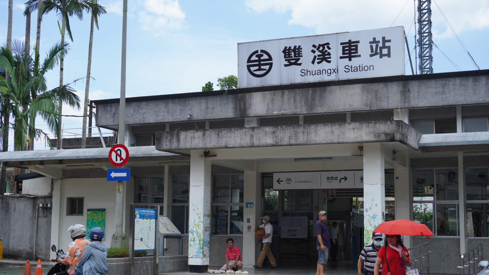

新北市雙溪區
基本資訊
位於新北市東北部，地處群山環繞的河谷地形，因雙溪河與其支流匯流而得名。長期以來，地形限制了大規模都市開發，使雙溪保有相對純粹的農村樣貌與自然景觀，也形塑出與西部都會截然不同的生活節奏。 這裡的聚落多沿溪而生，傳統農業、山林資源與地方信仰構成日常生活核心。隨著鐵路與觀光路線的發展，雙溪逐漸成為登山健行與生態旅遊的入口地區，在自然保育與觀光發展之間尋求平衡，呈現出新北市少見的山城風貌與靜謐氣質。
推薦景點
| 雙溪老街
位於雙溪區市街核心，沿著雙溪河發展，是早期山區聚落對外往來與物資集散的重要場域。街道尺度不大，卻保留了傳統店屋與生活型商業的痕跡，呈現出以居民日常為主的樸實街景， 與高度觀光化的老街形成鮮明對比。雙溪老街的街景之所以動人，來自仍在運作中的在地店家所形塑的生活氣息。老街上可見傳統打鐵舖持續以手工打造農具與生活器物，敲擊金屬的聲響在街道間迴盪，保留了山城與農業社會緊密 相連的勞動記憶，也讓老街不只是被觀看的歷史空間，而是仍然被使用的日常場域。街邊的營養三明治攤則承載著居民與過客共同的飲食記憶，酥炸麵包夾入簡單配料，份量實在、滋味樸實，是雙溪人熟悉的庶民小吃。炎熱時節，老街上 的冰店提供剉冰與古早味冰品，清涼不繁複，成為人們暫歇、交流的所在。這些看似平凡的店家，共同構成雙溪老街最真實的特色，使整條街道在日常飲食與勞動聲響中，自然延續地方文化與生活節奏。
| 三貂嶺隧道
位於新北市雙溪與瑞芳交界，原為台鐵宜蘭線的重要鐵路隧道，長年承擔北台灣東部交通往來的關鍵角色。隧道穿越山體，結構厚實，見證了早期鐵道工程在地形限制下所展現的技術與人力投入，也串連起礦業、聚落與鐵路發展的歷史脈絡。 在鐵路改線與新隧道啟用後，舊三貂嶺隧道經活化轉型，成為結合自行車道與步行體驗的空間。隧道內部保留原有結構，行走其中可感受濕潤岩壁、昏暗光線與回音交錯的氛圍，讓人以身體感知過往鐵路時代的節奏。這條隧道不僅連結雙溪與瑞芳，也象徵交通設施從運輸功能轉化為文化與休閒場域的可能性。
